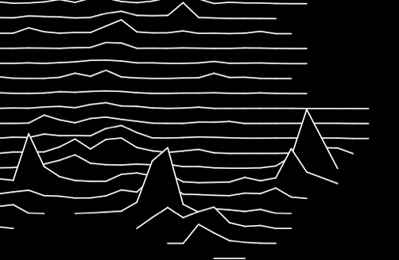
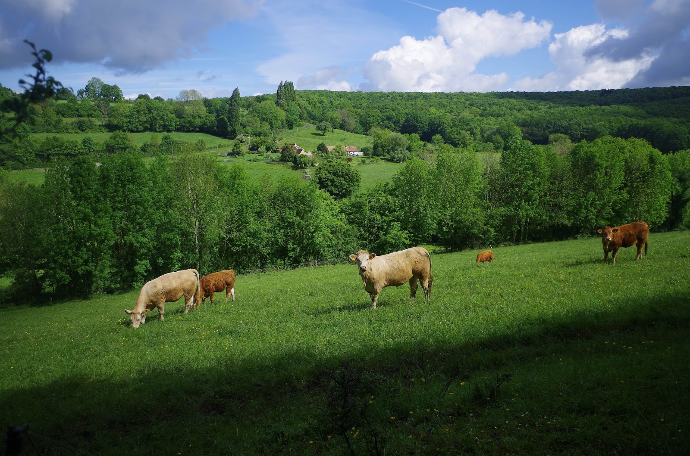
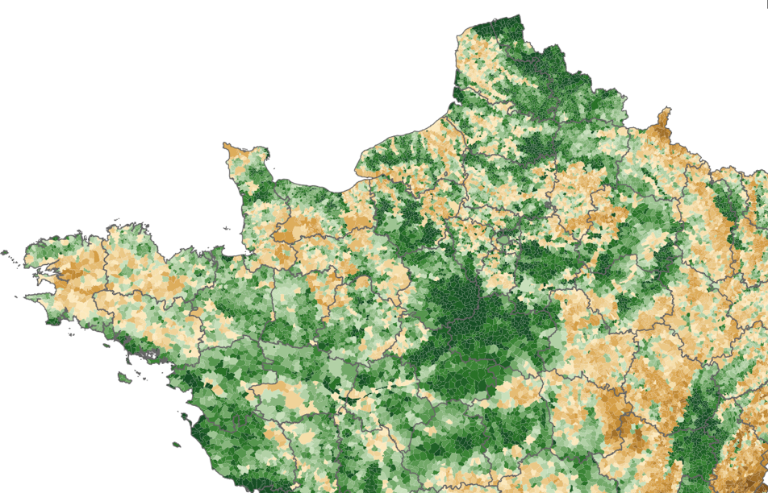
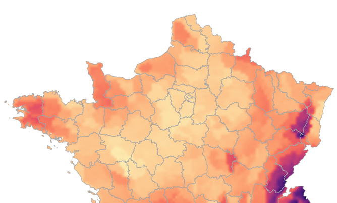
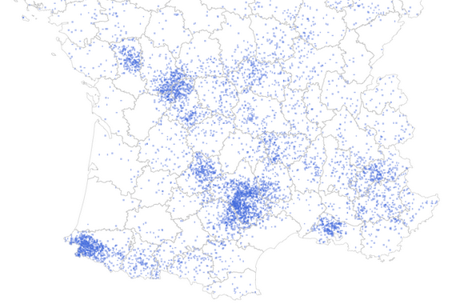

Nalyse de données.
Montreuil Zoo
©2017 mtmx | Template by Bootstrapious.com & ported to Hugo by Kishan B
Blog Post
Bête de scène

Unknown cartographic pleasures

Application pour un coin de campagne idéal

Altitude ≠ relief

Exploration des données de Météo-France en bottes et ciré

Localisation des principaux cheptels et lieux d'élevage
[Metrololo #4] Analyse infra-urbaine par station de métro
[Metrololo #3] Analyse infra-urbaine par station de métro